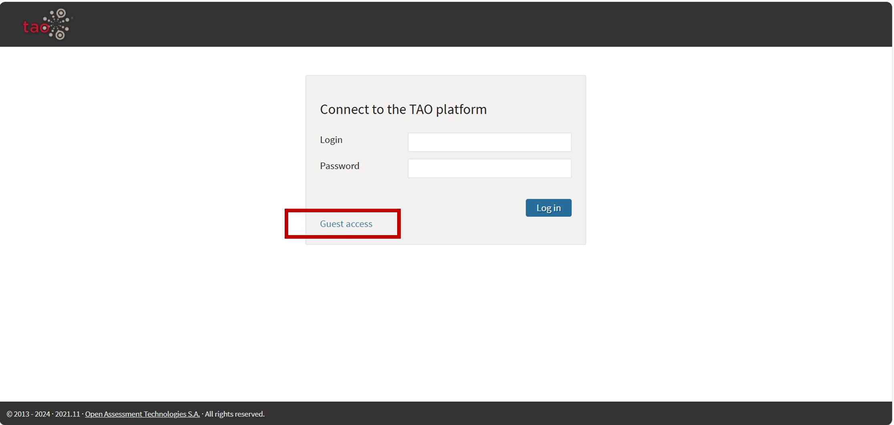

試験システムの操作体験
相談用メールアドレス（大学入試センター研究開発部 寺尾研究室）までご連絡ください。
ロックダウンブラウザの閉じ方は、操作体験を実施する前に必ずご覧ください。
ロックダウンブラウザの閉じ方を確認後、デスクトップに置いた設定ファイルをダブルクリックしてください。パスワードの入力が求められますので、以下のパスワードを半角数字で入力してください。
20251234
パスワードの入力後、Your screen will be recorded …から始まるポップアップウィンドウが表示されます。この実験では、試験実施者がみなさんの解答中の画面を録画することはありませんが、解答中にシステムからの通知などが届かないようにする上で必要な設定ですので、OKを押してロックダウンブラウザを起動してください。
試験システムが起動します。ログイン画面（下の図）が表示されれば問題ありません。
下のタスクバーにZoomのアイコンが表示され、Zoom Workspaceのポップアップ画面（ログインやミーティングルームへの参加のためのボタンが含まれる）が表示されれば、正常に設定が完了しています。

試験システムの操作を試すには、Guest Access（ゲストアクセス）をクリックしてください。デモ版の試験がいくつか表示されています。試験で使用される可能性がある出題・解答形式のサンプル問題の閲覧・解答体験ができますので、試してみてください。
また、操作方法の概要を示したYouTube動画もありますので、事前に確認してみてください。
- 解答開始の承認プロセスは、各科目で実施します。
ログインID・パスワードが記された受験票を、事前に配付します。
受験票に記載されたログインID・パスワードは、試験システムにログインするためのものです。受験環境の準備が完了したら、正しくログインできるか、確認してください。ログインが成功すると、テスト一覧の画面が表示されます。試験当日、試験監督者から承認されるまで、解答を開始することはできません。